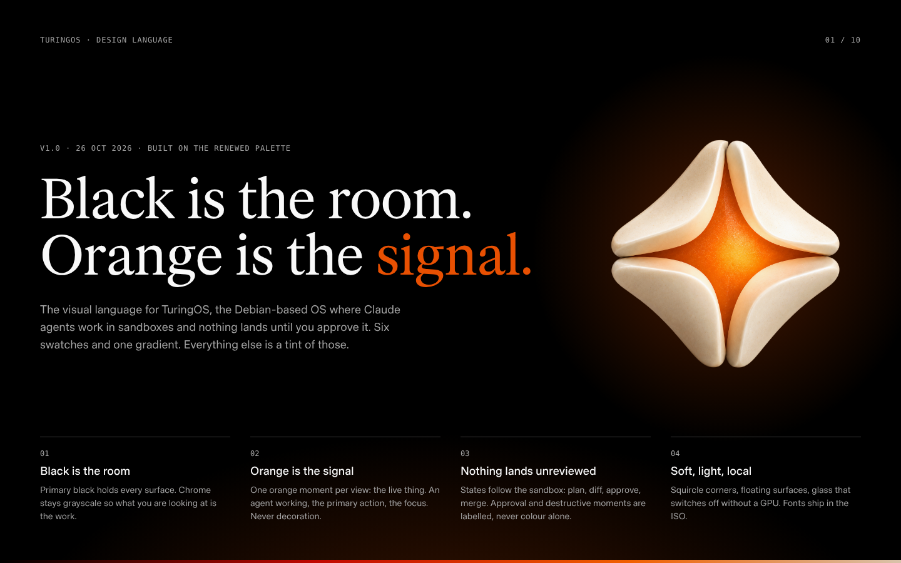
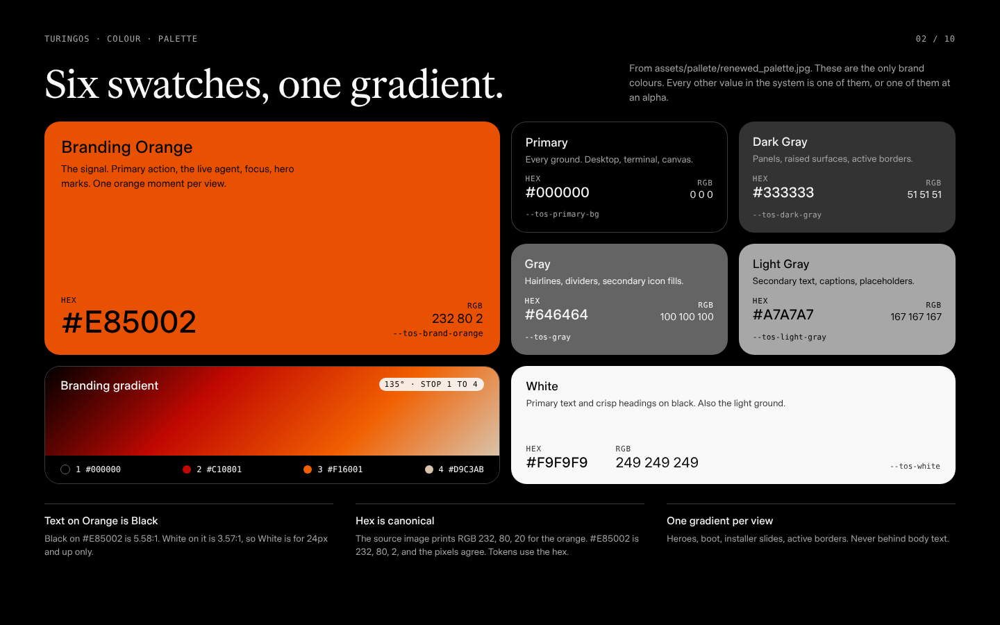
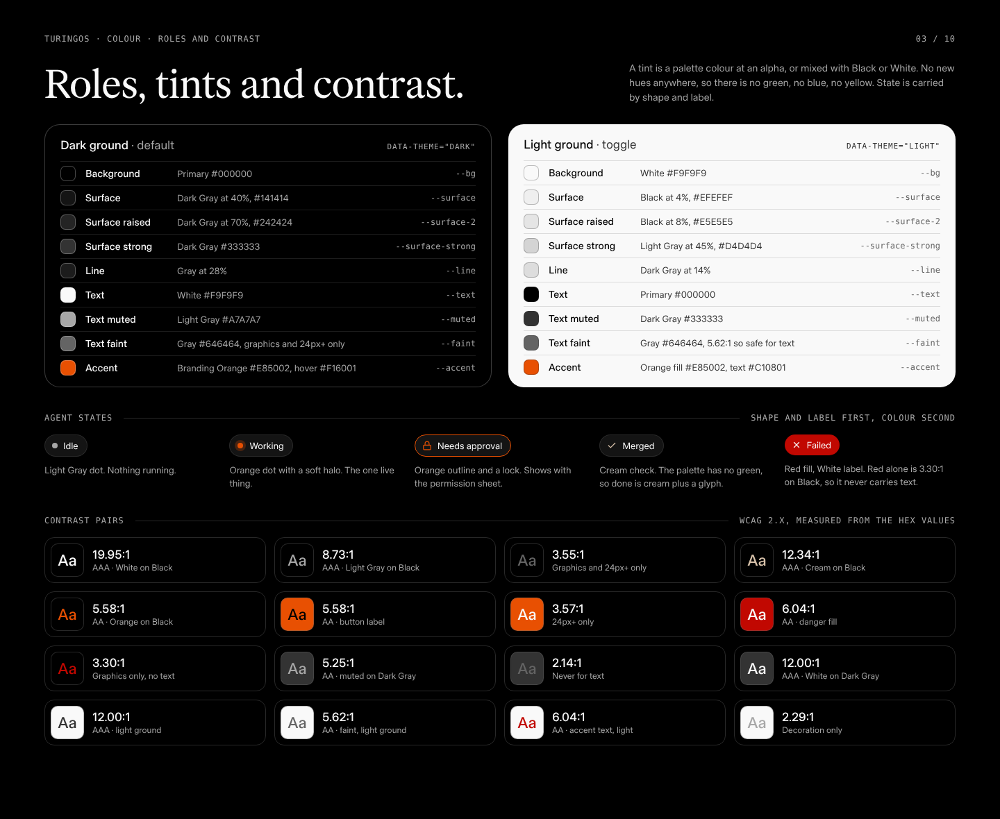
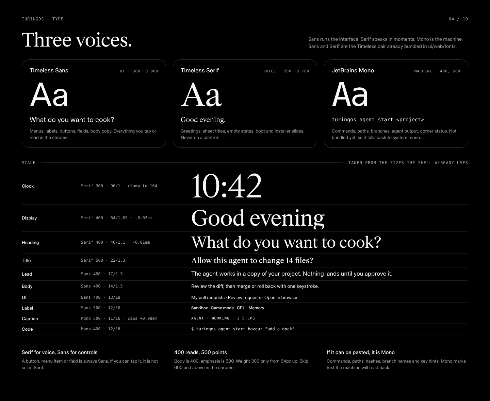
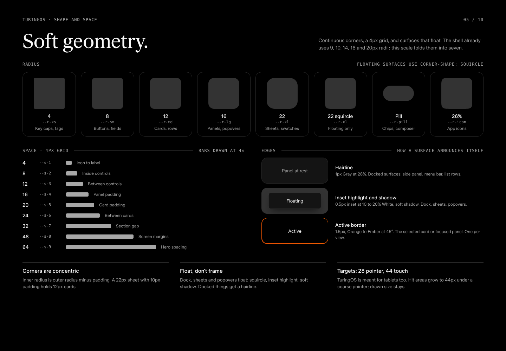
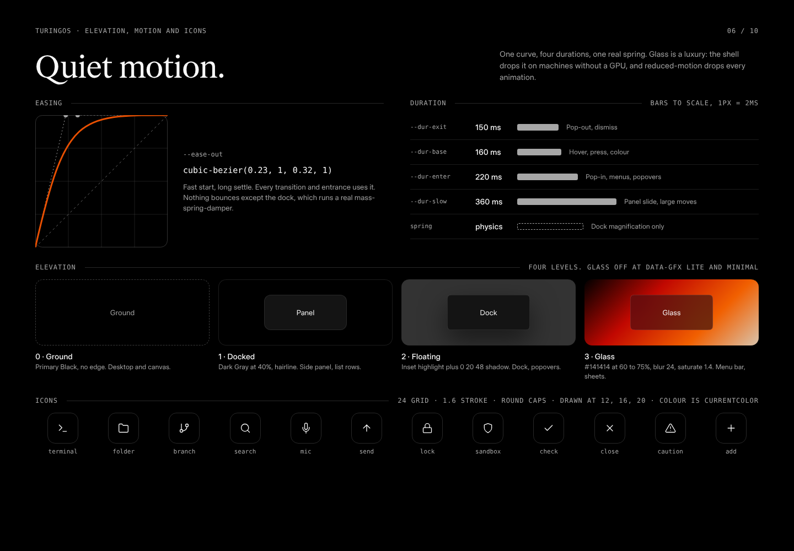
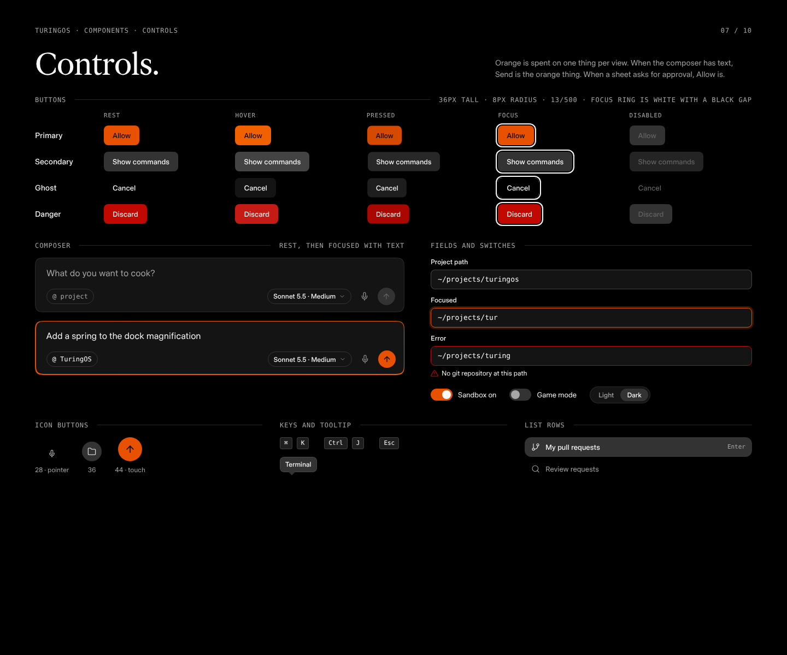
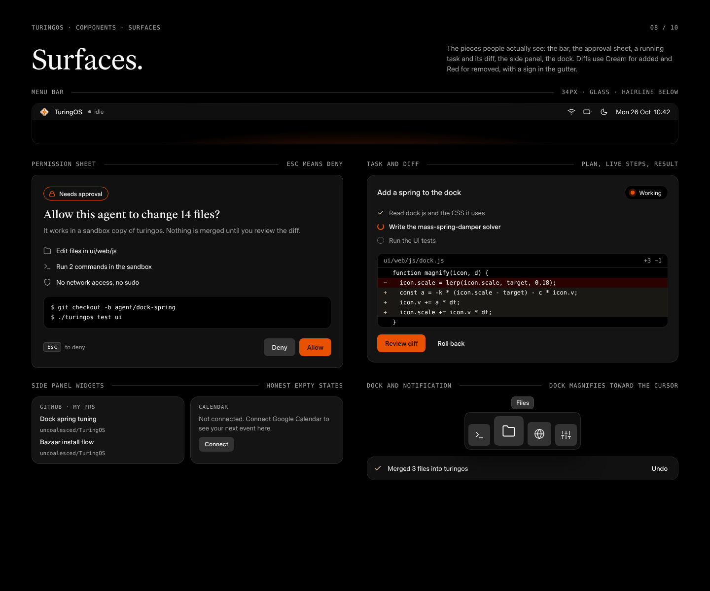
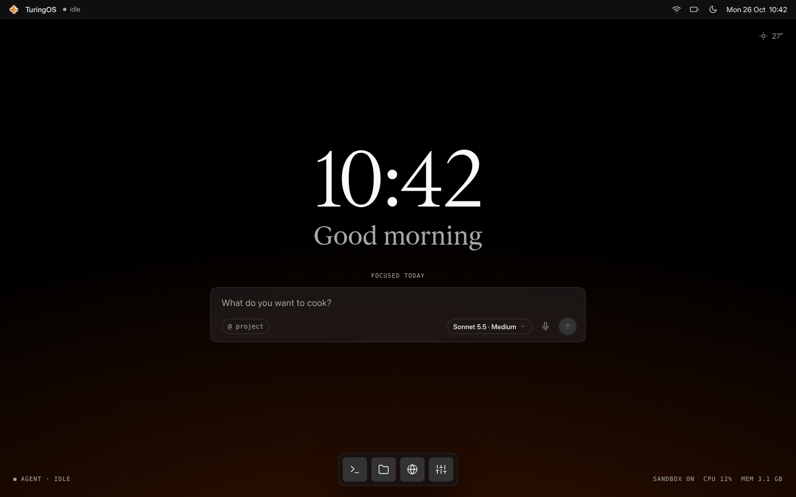
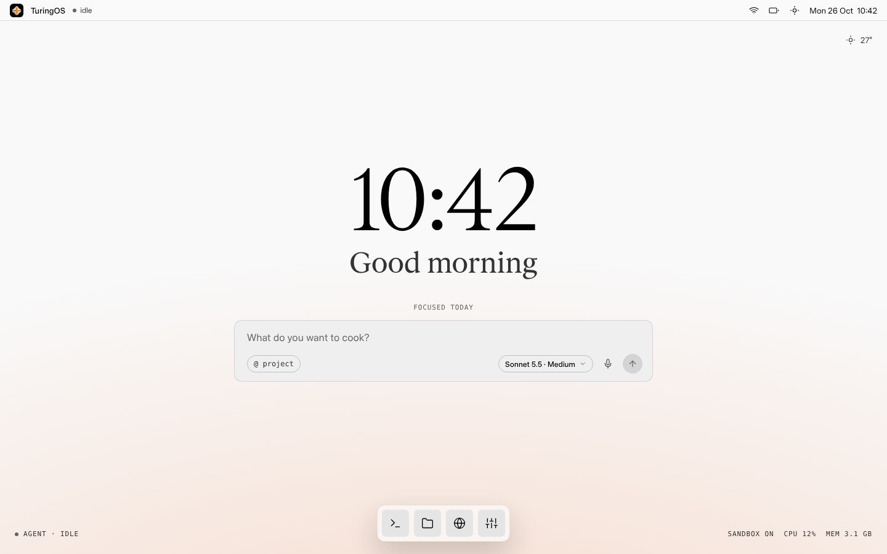

Offline copy. Spec for agents: DESIGN_LANGUAGE.md. Tokens: tokens.css. Palette: assets/pallete/renewed_palette.jpg only.
DESIGN_LANGUAGE.md
tokens.css
assets/pallete/renewed_palette.jpg









